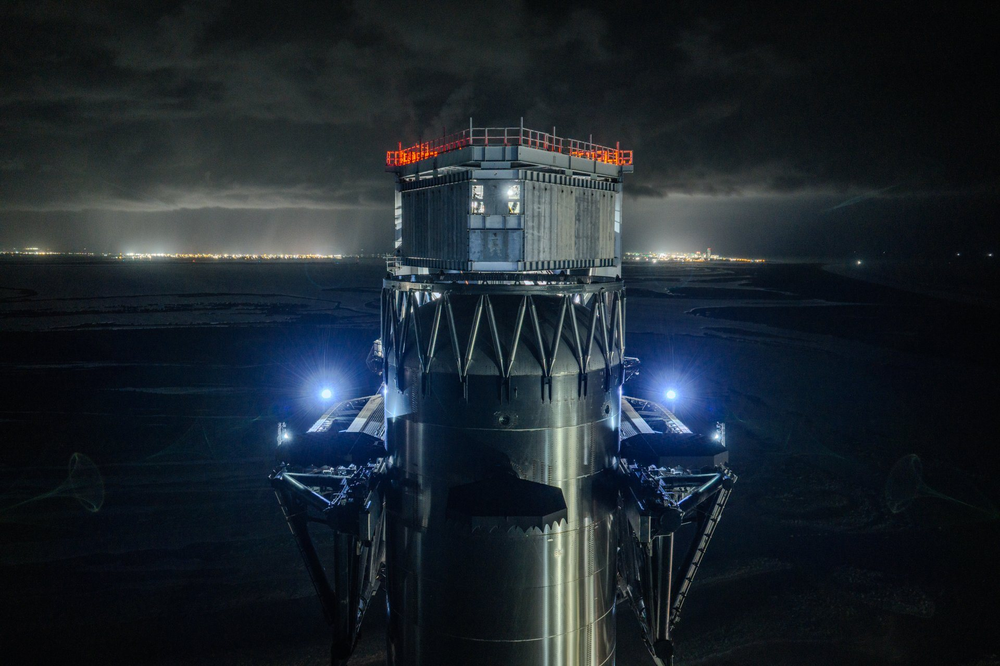
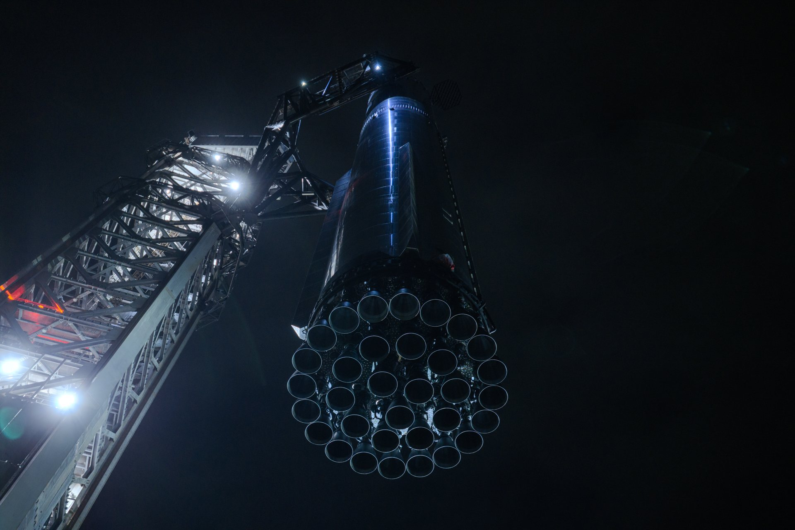
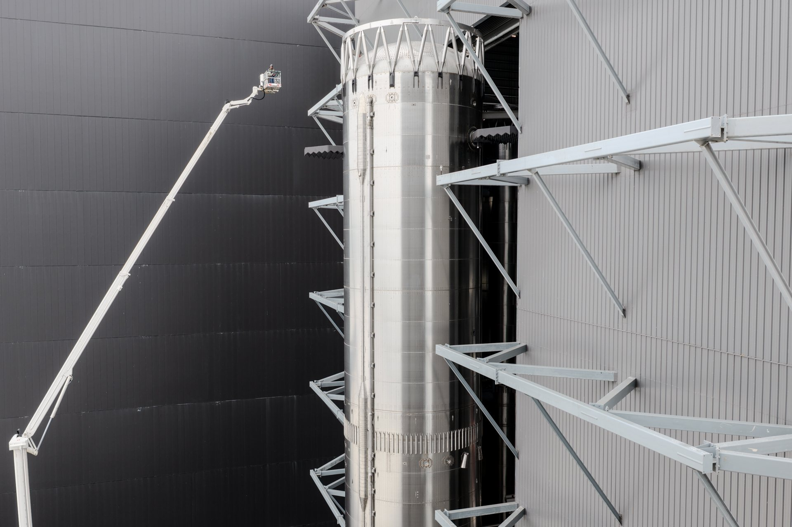

La sequenza degli ultimi giorni a Starbase è quella che precede un lancio vero. Il 10 novembre SpaceX ha portato in rampa Booster 22, il Super Heavy di Flight 15, e lo ha usato per un'ultima prova con i bracci della torre. L'11 novembre sera il contenitore che carica i satelliti è partito dalla fabbrica verso la Mega Bay 2, dove aspetta Ship 42. Nella notte sono comparsi gli avvisi per il rientro della nave sopra il Messico. Il decollo resta fissato non prima di venerdì 13 novembre, alle 23:45 ora italiana, ma la firma della FAA sulla modifica di licenza non è ancora arrivata.
Booster 22 sul Pad 2 e la prova di presa
Il messaggio di SpaceX del 10 novembre è breve e preciso: il Super Heavy è stato spostato sulla rampa di Starbase. Booster 22, scrive l'azienda, è il primo booster V3 destinato a tornare al sito di lancio per essere catturato, e appena arrivato è stato usato per le ultime prove di presa, «including a suspended squeeze test at catch height»: tra queste un test di stretta con il booster sospeso all'altezza a cui verrà afferrato.
In pratica i bracci della torre, le cosiddette bacchette, hanno sollevato il booster e lo hanno tenuto in aria nella posizione in cui dovrebbero riceverlo pochi minuti dopo il decollo, stringendolo come faranno al ritorno. È una verifica meccanica che ha senso solo con il veicolo vero: Booster 22 è un V3, più alto e più pesante dei Super Heavy di prima generazione, e il Pad 2 non ha mai ospitato un catch. I tre recuperi riusciti finora, sui voli 5, 7 e 8, sono avvenuti tutti con booster V1 e sulla torre del Pad 1.
Le quattro foto pubblicate da SpaceX mostrano il booster nella Mega Bay prima dell'uscita, poi la sommità stretta fra i bracci e i 33 Raptor visti dal basso con il veicolo sollevato. L'11 novembre Elon Musk ha rilanciato il post sul proprio profilo. Nella notte successiva il carrello che aveva portato Booster 22 in rampa è tornato verso la zona di produzione: il booster resta sul supporto di lancio, in attesa della nave.

Ship 42 carica i 26 Starlink V3
L'altro passaggio visibile è avvenuto l'11 novembre in serata, ora del Texas. Il contenitore che SpaceX usa per caricare i satelliti nella stiva di Starship, chiamato Starlink Speed Loader, è uscito dalla Starfactory, ha attraversato la Gigabay, ha percorso per un breve tratto la statale 4 ed è arrivato alla Mega Bay 2. Lì la porta si è aperta mostrando Ship 42. Il carico previsto è quello indicato da SpaceX sulla pagina di missione: 26 satelliti Starlink V3, ognuno da circa 1 terabit al secondo di capacità, per un totale pari a circa dieci lanci di Starlink V2 Mini su Falcon 9.
La sequenza attesa dagli osservatori a Starbase è semplice: la nave esce temporaneamente dall'hangar, il caricatore entra, la nave rientra e riceve i satelliti. Poi dovrà essere portata in rampa e sollevata dalla torre sopra Booster 22. Sono gli ultimi due gesti prima del conto alla rovescia, e alla mattina del 12 novembre in Italia non risultano ancora completati.
Tre dei 26 satelliti sono modificati con telecamere: dopo il rilascio fotograferanno lo scudo termico della nave. Quelle immagini sono uno degli elementi con cui i controllori decideranno se far tornare Ship 42 a Starbase o farla ammarare in uno dei punti di riserva nell'oceano.

Cieli chiusi venerdì e sabato
L'11 novembre sono state pubblicate le restrizioni temporanee al volo per l'area di Starbase in due giorni distinti: venerdì per il lancio e sabato per il possibile ritorno di Ship 42. Nella notte fra l'11 e il 12 novembre è comparso anche il primo NOTAM, l'avviso ai naviganti aerei, per il rientro della nave sopra il Messico. È il segno concreto di un profilo mai volato prima: invece di finire in mare, la Ship dovrebbe attraversare il Messico settentrionale e il Texas meridionale per tornare alla torre da cui è partita.
Le due date discendono dalla cronologia ufficiale. Il volo dura più di 22 ore e circa 14 orbite. Il catch della nave è indicato a T+22 ore, 32 minuti e 34 secondi: se il decollo avviene alle 16:45 del Texas di venerdì, la presa cade intorno alle 15:17 locali di sabato, le 22:17 in Italia. Uno slittamento all'interno della finestra di 75 minuti sposta in avanti di altrettanto il ritorno della nave.

Cosa manca: la firma della FAA
Per Flight 15 SpaceX ha bisogno di una modifica della licenza di lancio che autorizzi, fra l'altro, il ritorno della nave sopra zone abitate. Le condizioni interne per decidere il rientro e la presa, scrive l'azienda, sono già state approvate dall'ente; la licenza vera e propria no. La pagina di missione continua a indicare il lancio «as soon as Friday, November 13, pending regulatory approval». Fra gli osservatori il documento è atteso a giorni, ma finché non viene pubblicato il 13 novembre resta una data obiettivo.
Gli altri segnali da guardare nelle prossime ore sono quelli fisici: il trasferimento di Ship 42 sul Pad 2, l'accoppiamento dei due stadi e la chiusura della strada per il giorno di lancio. Ognuno di questi passaggi può spostare il calendario di un giorno o più, come SpaceX stessa avverte scrivendo che il programma è dinamico.
| Quando | Evento | Stato |
|---|---|---|
| 12 o 13 novembre | Ship 42 sul Pad 2 e accoppiamento | atteso, non ancora avvenuto |
| Venerdì 13, circa 23:15 | Inizio diretta SpaceX | circa 30 minuti prima del decollo |
| Venerdì 13, 23:45 | Apertura finestra | 75 minuti, servono licenza e meteo favorevoli |
| Venerdì 13, circa 23:52 | Catch di Booster 22 | primo tentativo con un Super Heavy V3 |
| Sabato 14, circa 22:17 | Catch di Ship 42 | solo se i controlli di bordo restano verdi |
Intanto, a Vandenberg
Mentre Starbase si prepara, SpaceX ha lanciato nella notte un Falcon 9 dalla California. Alle 4:36 ora italiana del 12 novembre il razzo è decollato dalla rampa SLC-4E di Vandenberg con la missione USSF-627 per la Space Force. Il primo stadio B1103, al settimo volo, è atterrato sulla nave drone Of Course I Still Love You nel Pacifico. Il carico è classificato: gli osservatori lo collegano a satelliti Starshield in orbita bassa, sulla base delle zone di ricaduta degli stadi, ma né SpaceX né la Space Force hanno confermato natura e numero dei satelliti.
Il dossier sullo Starlink Mini 2, l'antenna portatile con batteria rimovibile, porta USB-C e Wi-Fi 6 presentata il 10 novembre, passa all'archivio Notizie. In primo piano torna Starship: se licenza, meteo e veicoli terranno, fra venerdì e sabato si tenterà per la prima volta di riportare alla torre entrambi gli stadi di un razzo orbitale, il booster pochi minuti dopo il decollo e la nave il giorno dopo.
Fonti pubbliche e tracce
Ultimo aggiornamento editoriale: 12 novembre 2026, ore 9:30 (ora italiana). Nel corpo non si ripete la fonte a ogni frase: le tracce sono raccolte qui. Le citazioni in inglese sono tradotte o riassunte subito dopo. Date e orari restano obiettivi finché non arrivano licenza di lancio e conto alla rovescia confermato.
- SpaceX, pagina di missione Starship Flight 15: lancio non prima di venerdì 13 novembre, finestra di 75 minuti dalle 16:45 CT, in attesa dell'approvazione regolatoria; primo Super Heavy V3 al catch; 26 Starlink V3 (1 terabit ciascuno, pari a circa dieci lanci V2 Mini), tre con telecamere sullo scudo; volo di più di 22 ore e circa 14 orbite; catch della Ship a T+22:32:34; diretta circa 30 minuti prima del decollo.
- SpaceX su X, 10 novembre 2026: Super Heavy spostato in rampa; Booster 22 primo booster V3 destinato al ritorno per il catch; prove finali di presa, compreso il «suspended squeeze test at catch height»; quattro fotografie.
- Elon Musk su X, 11 novembre 2026: rilancio del post SpaceX sul trasferimento del booster in rampa.
- SpaceX, aggiornamento «Returning Starship to the Launch Site», 7 novembre 2026: rientro sopra Messico settentrionale e Texas meridionale; condizioni per il ritorno e la presa approvate dalla FAA, distinte dalla licenza di lancio.
- NASASpaceflight su X, 11 novembre 2026: lo Starlink Speed Loader lascia la Starfactory per caricare Ship 42 con 26 Starlink V3; post di wvmattz rilanciato da NASASpaceflight: percorso dalla Starfactory alla Mega Bay 2 e sequenza di carico attesa.
- efraser77 per NASASpaceflight, 11 novembre 2026: il carrello che ha portato Booster 22 in rampa torna verso la produzione.
- SpaceNotices su X, 11 novembre 2026: restrizioni temporanee al volo per Flight 15 venerdì e per il possibile catch di Ship 42 sabato; SpaceNotices, 12 novembre 2026: primo NOTAM per il rientro di Ship 42 sopra il Messico.
- Space.com, Mike Wall, 10 novembre 2026: trasferimento di Booster 22 in rampa, descrizione delle quattro foto SpaceX, orari del lancio.
- The Space Launches, 6 novembre 2026: necessità di una modifica di licenza FAA per il ritorno di Ship 42 sopra aree abitate.
- Spaceflight Now su X, 12 novembre 2026, NASASpaceflight e SpaceX: decollo di USSF-627 alle 03:36 UTC da SLC-4E con B1103 al settimo volo e atterraggio su Of Course I Still Love You; Launch Library 2: missione classificata, possibile carico Starshield.
- Rivoluzione Spaziale, dossier dell'8 novembre 2026: profilo completo di Flight 15 e piano di ritorno della nave.
Fotografie utilizzabili
Copertina e tre figure sono le fotografie pubblicate da SpaceX su X il 10 novembre 2026 che mostrano Booster 22 nella Mega Bay e sul Pad 2 durante le prove di presa: immagini dell'evento, usate con credito SpaceX e dicitura «uso editoriale non commerciale». Non risultano foto con licenza libera del trasferimento in rampa. Dettagli in scheda dei crediti fotografici.
Apri il dossier Starlink Mini 2 archiviato · Archivio Notizie · Torna a SpaceX